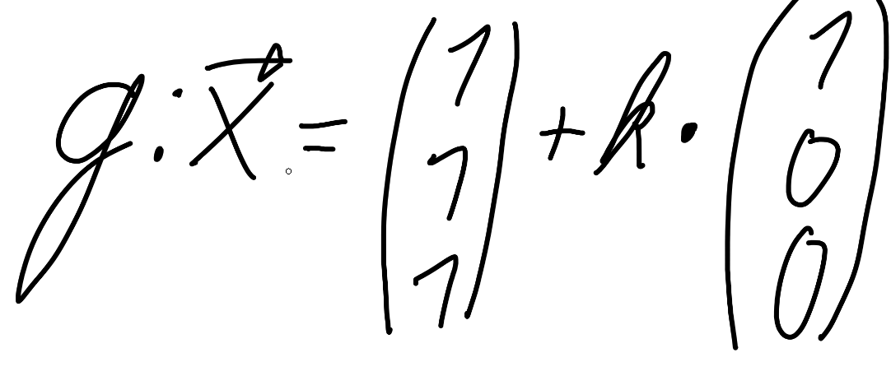
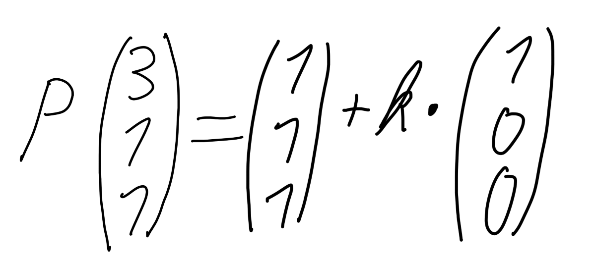

und einen Punkt:

Das 'Problem' dabei ist, dass k unbekannt ist, wir versuchen also k zu finden.

Wir vereinfachen die Gleichung indem wir den Ortsvektor abziehen.
man könnte die Lösung bereits erahnen, doch wir machen es ordentlich weiter
und schreiben die nun als lineares Gleichungssystem auf.
I
,II
undIII
mit dem selbenk
gelößt werden könnenWir teilen also durch den faktor vor
k
(dort wo wir nicht0k
haben.)
wir prüfen, ob wir k1 (k aus
I
) inII
undIII
einfügen können.
Damn viel zu einfach, Tinolm der idiot hat viel zu einfache Zahlen genomen